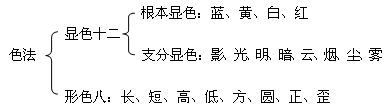
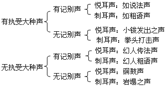
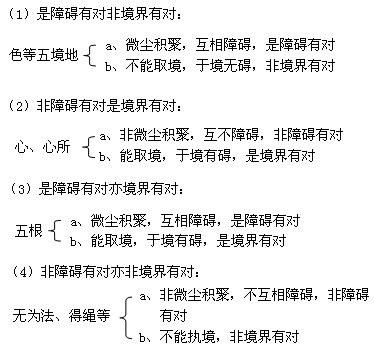
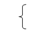

|
第一品 分别界品
20.有为法是何义？如何分五类？
答：有为法：指由诸多因缘聚合而成的一切法。有为法包括有漏法（即苦集二谛）以及道谛。有为法分成五类，即是五蕴：色、受、想、行、识。
将有为法如此分成五类而进行认识的原因是：
识：大多数凡夫将心识执为“我”；
色：“我”执著内外色法与我关联；
受：“我”执受为我所感；
想（能执所缘境的体相，并施设名言）：即是能安立名言而执著；
行：行即执著有所造作，如行善等。
由上可知，凡夫皆执此五蕴为我及我所。然而此五蕴唯是因缘聚合而成，是有为法。
21.有为法有哪几种别名？如何解释？
答：时间：以前的有为法已经过去，现在的正在流逝，将来的亦将流逝，由此显示了有为法的无常性及迁流性，故称为时间；
言依：语言的基础是名称，由于依靠具有意义的名称来宣说，因而语言的直接内容是名称，所耽著的内容是一切有为法；
出离：要脱离的是痛苦之处，痛苦是有为法，超离忧苦就达到了有为法的边际，由此称出离。得无余涅��时舍弃道谛，故道谛亦是出离。
有基：有为法具有因的缘故而称有基，基即是因。
22.有漏法的别名是什么？
答：近取蕴：有漏法近取之因是烦恼，由近取因中产生蕴，故称近取蕴，就像由草所生的火称为草火一样。
有诤：诤即烦恼，以烦恼损害自他故说是诤，诤于有漏法中以所缘或相应的方式增长，故名有诤。
痛苦：有漏法与三苦中的任何一种皆相关联故名痛苦。
集：是痛苦之因，故名集。
世间：有漏法刹那坏灭并能被违品毁灭，故名世间。
见处：即见的住处，因有漏法依靠见解通过所缘的方式随顺增长烦恼。
三有：即三界所有，因为由生死接连不断流转于三界中，故名三有。
23.色蕴有哪几种？
答：色蕴有十一种：五根、五境、无表色。
24.五根是什么？
答：五根即眼耳鼻舌身五根，是指毫不混杂地认知色等一切对境形象的诸识之所依或处所，是一种清净色法。如眼根：是执著自之对境色处的眼识之增上缘，是一种清净色法。余四根可依此类推。
25.色法（境）有多少种？
答：色法共二种，或二十种：

26.声有多少种？
答：

有执受大种声：由有情的不离五根的色香味触四境所发出的声音，即此声音由有情发出。
无执受大种声：非有情发出之声。
有记别声：此声音能够表达一种意义。
无记别声：此声音不能表达意义。
27.味有几种？
答：味有六种：甜、酸、辣、咸、涩、苦。
28.香有几种？
答：香有四种：妙香、恶香、平等香、不平等香。
29.所触有几种？
答：所触共十一种：
因所触：地、水、火、风
果所触：柔软、粗糙、轻、重、冷、饥、渴
30.无表色的五种特点是什么？
答：无表色是自己的发心不能以形相表示令他人了知的法。
无表色具有五种特点：
一、散乱：心在散乱时也有无表色，与有表色不同；
二、无心：在无想定、灭尽定等无心状态中无表色也存在；
三、善不善：无表色是善与不善法，不会是无记法（无记法心弱，不起无表色）；
四、随流：乃至没有毁坏之因期间，因一直持续存在；
五、大种为因：无表色依四种而生，并且四大种作为其所依、处所、增长之因。
31.四大种的作用与特征是什么？
答：一、四大种的作用：
地大：不舍而持受果色
水大：令所造色法不散，聚合的作用
火大：能成熟
风大：能增上
二、四大种的特征：
地大：坚硬
水大：湿润
火大：暖热
风大：轻、动
32.世人所认识的四大与佛法中的四大有何不同？
答：世人认识地水火风皆是显色、形色、是眼根对境，如说地，绿地、方地；说水，碧蓝的河水，长长的小溪等。
佛法中说地水火风是所触，是身根的对境。
33.受想行三蕴法相、事相分别为何？
答：受蕴法相：心依自力而体验自己对境的差别。
事相：苦、乐、舍。
想蕴法相：心毫不混杂地执著蓝黄等相。
事相：以六根识相应而言，分六想聚。
行蕴法相：色受想识四蕴以外的一切有为法。
事相：除受想以外的一切心所相应行法与得绳四相等不相应行法。
受想行三蕴包括于法处（界）中。
34.心、心所是一体还是异体？为什么？
答：心、心所是异体：
心以自力见到事物的本体。
心所见到事物的差别。
35.识蕴是什么？识蕴在处、界中分别如何安立?
答：识蕴法相：依自力分别认知对境的本体。
事相：六识聚。
识蕴在十二处中安立为意处。在十八界中为七心界。
36.七心界有哪些？意界是什么意思？
答：七心界即六识界与意界。
意界（六识升起时在现在位名识，刚刚灭尽时则成为升起后识之所依根）：六识刚刚灭尽无间阶段之识为意界，它并不是六识之外的异体法。
37.有说若意界包括六识界则应为十二界，若六识界包括意界，则应为十七界，对此种观点应如何破斥？
答：前六识升起分别依五个色根，第六识升起没有一个色根可依，故以六识灭尽安立意根，作为意识升起的所依根，就是为了建立第六识的所依根，安立意根界。由此承许界有十八种。意界，六识界体虽是一，但作用各别。六识于现在位六识界摄，六识灭尽则是意界，所以不能安立为十二或十七界，唯应十八界。
38.一蕴、一处、一界如何摄一切法？
答：一色蕴：包含色蕴、十有色界、十有色处以及法界的一部分无表色；
一意处：包含识蕴、意处、七心界；
一法界：包含法界的一部分无表色、受想行三蕴、法处、法界。
色蕴、意处、法界三种能摄是以自本体的方式来含摄一切法的（即所摄中的法虽然在蕴、界、处中有不同的安立，实际上是同一个体，故称以自本体方式含摄），并不摄他体法。
39.“眼耳鼻各有两个，所以界应安立为二十一界。”这种说法对吗？为什么？
答：这种说法不对。眼耳鼻虽各有两个，但是：
・两只眼睛上面作为眼识所依的清净色法是同类的；
・两只眼睛所享受的对境色法是相同的；
・两只眼睛只产生一个眼识的果。
所以眼睛数量虽有二，但同为有色根，故称为一个眼界。耳鼻也可依此类推，所以界只应当安立十八，而非二十一。
40.眼耳鼻为什么各生二数？
答：为了显得端严好看所以才生二数。因为众生（尤其是南赡部洲的众生）无始以来有一种习气，认为两个眼睛好看，一个头好看，心相续中有此贪爱习气，以此贪爱习气而积下如是之业，是故形成现在眼耳鼻各二数这样的结果，并非无缘无故而产生。另外，欲贤论师认为，生两个眼睛，一是为了看得明显；二是为了庄严。
41.蕴处界各自的含义是什么？
答：蕴：许多实法聚集、积聚，故称蕴；
处：作为产生心与心所之门，故称处；（六根处作增上缘、六境作为所缘缘而生心心所法，故皆是处。）
界：种类义而称界，如有多种宝物之山称宝界山；一相续中有十八种类的法，而称十八界。此外，各自同类作后面同类之因，而称种类。
42.为什么宣说蕴处界？
答：（1）为了遣除众生的三种愚痴心而说蕴处界：
为了遣除众生执著心、心所为整体（或为我）的愚痴而宣说了三蕴；为了分析受想行三蕴，为了遣除执著色为整体的愚痴而宣说十二处；为了遣除执著色与识为整体的愚痴而宣说了十八界，分析十色界、七心界。
（2）依利、中、钝三种根基而分别说三者。
（3）依喜欢简明、喜欢不广不略、喜欢详细三种意乐而分别说三者。
43.为什么“蕴中不摄无为法”？
答：五蕴中未说无为法，是因为无为法不具备诸蕴的含义（即无为法之义与色蕴乃至识蕴之义皆不相合）；无为法亦不能单立为第六蕴，因为它不具足蕴的法相（即没有积聚之义）；并且无为法也不是时间所摄，因而无为法在蕴中未说。
44.为什么受、想单独立蕴？
答：受与想二者成为在家与出家僧俗二者争论的根源，所有在家人均贪图体验乐受，于是为了财产、田地、牲畜与女人而争论不休；出家人由于对自他宗派有好坏的想法进而破立，展开辩论。而且，贪执乐受就会积累恶业，这也是由净乐等颠倒想所生，因而它们是轮回的主因，为此，除了其他一切心所以外，佛陀将受、想单独安立为蕴。
45.五蕴次第如是安立的理由是哪些？
答：五蕴的次第是按照粗细的方式而宣说的，大多数色都是有阻碍并且粗大，因此最先宣说。从非色来说，所谓我的手感觉、脚感觉说明受是粗大的，因而其次说受，之后执相而有粗想，再后愿我安乐，不要痛苦即是粗行，识只是觉知事物的本体，所以是细微的。或者，依照产生烦恼的次第来说，无始以来众生由于喜色而首先看色，由色的美与丑而产生乐受与苦受，从苦乐的感受中产生颠倒想，由想中产生贪嗔行，从中生起烦恼识。或者，以盛所享用之饮食的器皿以及食品、厨师、烹调、食者诸喻依次说明意义，色如器皿，受如食品，想如厨师，行如烹饪，识如食者。或者按照界的顺序来说，欲界以色为主，禅天（色界）以受为主，前三无色界以想为主，有顶以行为主，识蕴则在三界中都存在。
46.六根次第安立之理？
答：六根中：
先前五根：唯取现在对境之有境
后意根：取三时之有境且缘无为法而难以通达
前五根中：
先前四根：取四大所生的对境
后身根：取四大及四大所生的两种对境
前四根中：
先眼耳根：取较远之境
后鼻舌根：取较近之境
眼耳二根中：
先说眼根：取最远境
后说鼻根：取较远境
鼻舌二根中：
先说鼻根：先闻气味
后说舌根：后尝味道
另外，或按根所处位置而安立，眼根最上，余几乎都位于下方，意根无方所故最后说。
47.为什么只是眼根的对境才称色处、色界？为什么只是意根的对境才称法处、法界？
答：一、色蕴中五根、五境均是色法，但它们均有各自的差别，故分别立名，而不是总的立一个色处之名。唯眼根对境立色处名，而余九皆不立色处之名，是因为：
（1）余九处各有别名，而眼根对境无别名，故名色处以总名而了达别名；
（2）眼根对境有见有对，是最主要的色法，故称色处。另外，世人共说其为色，故立色处名。
二、所有处、界均是法，而单独立意根对境为法处、界，是因为：
（1）以总名了达别名（一切法是总，意根对境是别）；
（2）意根对境摄法最多，并且其中摄有涅��法，其最主要，故称法处。
48.八万法蕴如何包括在五蕴中？
答：八万法蕴，按照经部所说皆是耳根对境的语言词句，包括在色蕴中；按照有部的观点皆成为意根对境的名称，包括在行蕴中。
49.颂词“所有八万诸法蕴”中八万法蕴有何不同说法？
答：克什米尔有部承认八万法蕴，其余小乘以及大乘普遍采取八万四千法蕴。
50.每一蕴之量有多少？
答：一种说法：每一法蕴之量与《法蕴足论》相同，有六千颂。或者与舍利子论典中法蕴之量相同。
另一说法：圆满宣说蕴、处、界等每一部的完整语句就是每一法蕴的量。
也有说：为了对治所化众生贪嗔痴以及三毒平等八万行为而相应宣说八万法蕴，即每一法蕴之量以能对一烦恼而定。
51.经中所说蕴、处、界，如何包括于论中所说之五蕴、十二处、十八界？
答：经中所说：
蕴：戒蕴、定蕴、慧蕴、解脱蕴、解脱知见蕴，其中戒蕴是身语七断，是无表色，包括于色蕴中；余四蕴是心所，包括于行蕴中。
处：凡有处名皆可摄于十二处中。
界：凡有界名皆可摄于十八界中。
52.经中说六界，地水火风空识，什么是空界？空界与无为虚空是否相同，有部与经部有何不同观点？
答：空界并非是指无为虚空与庄严虚空，而门与窗等处的空隙称为空界。空界以明暗为体，是色法。自本体可受损害，因而是有碍法。
有部：空界与虚空无为不同，空界是色法，明暗为体，是有碍法；而虚空是无为的，无碍为体，是常法。
经部：空界与无为虚空是相同，并非是两种，唯是一种无为虚空。无为虚空是无碍法，是常法。但是此无为虚空也只是名称存在，实体并不实有，而从其非无常之反体上称为常法。
53.经中说的地、水、火、风、空、识六界，其中识界是有漏无漏？
答：有漏识是识界。此六界是有情生命的所依，生命从入胎到死亡之间皆由此六界执持，识界即是有情续生之因，故是有漏法。而无漏法能破坏轮回，能断除有情转生三有，并非有情流转三有之所依。所以说，识界不是无漏法。
54.什么是有见？
答：说“这个在这里、那个在那里”，因为有这样的言说，便可以证明所说者是以眼识可见的，所以有言说即名有见。以眼识可见的（即有见）于十八界中唯有色法界。
55.有对法有哪些？
答：有对就是有碍。有对法分为三种：
（1）障碍有对：一个色法的位置上不能有另一法是障碍有对（五根、五境）。
（2）所缘有对：执著一个所缘境便阻碍了执著此外的其他所缘境，此为所缘有对（心、心所即七心界与法界相应法）。
（3）境界有对：诸如眼睛取色法而不能听声音，是境界有对（五根、心、心所）。
56.是境界有对，障碍有对如何分作四句分别？
答：

57.十八界中唯是无记法的是哪些？
答：唯一是无记法的有八种：眼、耳、鼻、舌、身、香、味、触。余十种皆通善、不善、无记三种。
58.色和声如何通善、不善、无记法三种？
答：一、色、声若不为相续所摄：唯自性无记法。
二、色、声若为相续所摄：据发心通善、不善、无记。
身有表之色法：
（1）磕头：发心善，色法亦善；
（2）杀生：发心不善，色法亦不善；
（3）吃饭：发心无记，色法亦无记。
语有表之声法：
（1）念咒：发心善，声法亦善；
（2）妄语：发心不善，声法亦不善；
（3）无义语：发心无记，声音亦无记。
59.八种无碍界如何通善、不善、无记三种？
答：八种无碍即七心界与法界。
七心界因与贪不贪助伴等相应存在而具善、不善、无记。如：
 见美色，眼识与贪心相应：不善法
见佛陀，眼识与信心相应：善法
见平常色法，眼识不与贪等相应：无记法
法界通善、不善、无记各分四种：
以善为例：一、本性善：心所法中无贪、无嗔、无痴。
二、相应善：与本性善心所相应之心所。
三、等起善：因发心善而成为善。
四、胜义善：抉择灭（虚空、非抉择灭为无记）。
60.十八界中属于三界的各有哪些界？
答：属欲界：十八界，因十八界皆可增长欲界的烦恼。
属色界：十四界，除香味及鼻舌二识。
属无色界：三界，意界、法界、意识界，无色，故无五根、五境，亦无五识。
61.为什么色界无香味及鼻舌识？
答：因为香味是段食性，色界已离段食（《大毗婆沙论》云：“段食是何义？答：分段而食，故名段食。”），所以香味在色界不存在，香味境不存在故，鼻舌二识亦不能产生，所以鼻舌二识在色界也不存在。
62.所触也是段食性，那所触在色界也应该不存在了吗？
答：所触有段食性与非段食性两种，色界无段食，属于段食性的所触就不存在了，但非段食性所触，如根等色法及衣物等上面的所触却存在。
63.十八界中哪些是有漏，哪些是无漏？
答：意、法、意识三界通有漏与无漏：
苦谛、集谛所摄的是有漏法，有烦恼随顺增长故（属三界所摄之法）
道谛、无为法所摄的是无漏法，无烦恼随顺增长故（不属三界所摄）
64.寻、伺是什么意思？
答：寻、伺是二种心所。
寻（显扬一卷十页云：“寻者，谓或时由思，于法造作，或时由思，于法推求，散行外境，令心粗转为体，障心内净为业。乃至增心为业。”入阿毗达磨论上七页云：“寻，谓于境令心粗为相，亦名分别思维。想风所系，粗动而转。此法即是五识转因。”）：对外境事物的大概寻求了知。
伺（显扬一卷十页云：“伺者，谓从阿赖耶种子而生，依心所起，与心俱转相应，于所行法略行外境，令心细转为体。余如寻说，乃至增长伺为业。”入阿毗达磨论上七页云：“伺，谓于境令心细为相，此法即是随顺意识于境转因。”）：能对事物的本体详细了知。
65.寻伺于十八界中有无的情况是怎样的？
答：五种识界：有寻有伺。
最后三界意、法、意识界具有三种：有寻有伺，无寻有伺，无寻无伺。
一、有寻有伺：欲界与初静虑粗分正禅的意界、意识界，与相应法界（除寻伺）是有寻有伺。
（欲界的初禅之地为有寻有伺地）
寻心所起，无第二个寻与之俱起，故是无寻有伺，非有寻有伺；
伺心所起，无第二个伺与之俱起，故是有寻无伺，非有寻有伺。
所以此二须除去。
（注：心、心所的生起，必有与之相应的心或心所同时俱起，如一善心生起，必定有十个遍大地法，十个大善地法及寻伺共二十二个心所与之同时生起，那么这二十二个心所就是那个善心的相应心所；同样的对于寻心所来说，善心以及余二十一个心所就是他的相应心、心所，现在所要说的就是在每一个心或心所的相应心心所中有无寻伺二者的存在。如刚才善心之相应心所就是有寻有伺，寻心所的相应心心所中就是无寻有伺。）
二、无寻有伺：
（1）初静虑殊胜正禅的意、意识及相应法界（除伺），本地断除寻而有伺，故为无寻有伺（即此初静虑殊胜正禅之地为无寻有伺地）；
（2）欲界的寻、初静虑粗分正禅的寻，此寻（之相应法中）无第二寻相应而必俱伺相应（欲界初禅之地中有寻有伺），故为无寻有伺。
三、无寻无伺：
（1）第二静虑以上之意、意识断寻伺，即相应法界中不具寻伺二心所，故是无寻无伺（即第二静虑以上至有顶是无寻无伺之地）；
（2）初禅殊胜正禅的伺，无第二伺相应，其地中无寻，故为无寻无伺；
（3）不相应法界（法界中所摄非相应法）：不具寻伺二者，是无寻无伺；
（4）眼等十色是不相应法，无寻无伺。
66.经中说：“诸比丘，眼识了知蓝色而并非蓝色之分别。”意思是说五种根识无分别，该怎样理解此处所说的无分别？
答：有部承许分别有三种：自性分别、计度分别、随念分别。经中说五种根识无分别，密意是说五种根识无有计度分别与随念分别，并非是说远离了自性分别。
（前文说五种根识有寻有伺，有寻有伺即是有分别，而经中说无分别，论与经所说的不同，故有此问。）
计度分别：指与意识相应，散于外境的智慧（入定中则无）。
随念分别：一切入定与出定与意识相应的忆念。念，是指不观待名称而唯念及意义（通入定与出定）。
67.十八界中有缘、无缘的有哪些？
答：有缘：能够缘对境而执著称有缘。指七心界以及法界一半即一切心所。
无缘：不能够缘对境而执著称无缘。指余五根五境以及法界一半即余非相应法。
68.有执受、无执受是什么意思？
答：有执受：心心所法将根及其群体中的四境作为依处，若对此等色法作利害，则会产生苦乐的感受即心心所执而生受，也就是世人所说的有苦乐等感觉。
无执受：未被心心所执而生受，是无执受。
69.十八界中何者有执受，何者无执受？
答：八无碍界及声界共九种：无执受。
眼等五根及四境：有执受与无执受二种。
有执受：现在五根及其群体中的四境。
无执受：（1）过去、未来之五根及四境；
（2）须发、指甲、血液等与根不相合之法；
（3）不被相续所摄即身外之土木等。
70.八界中是大种性与大种造的有哪些？
答：既有大种性又有大种所造：所触。

71.十八界中何者为积聚之法？
答：眼等十色界是极微积聚的，余八无碍界不是极微积聚的。
72.十八界中何者为能断所断？何者非能断所断？
答：既是如斧头般的能断，亦是如木柴般的所断是外界的色香味触。所谓断是指截断色法的相续，令其成为两个相续。
非能断亦非所断者：
（1）诸根。诸根如光芒般清澈，相续无法断开；
（2）声音。声音不能相续；（声音之发出皆由四大之相互撞击而产生，声音自己并无前刹那产生后刹那的过程，故说声音不能相续，与色香味触不同。）
（3）八无碍界（七心界与法界）。不是色法，不存在聚合。
以上三者不成为所断，亦非能断。所以说能断所断唯是指色香味触外四境。
73.关于身根是否所断有何不同说法？
答：（1）有问：如手断掉了，仍在动，这时是否可说身根可以断掉？
有部：所断部分并无身根。手虽断掉，但身根不断。因这时身根仍在身上，手断掉后仍能动，是因手上有能变之风，气风未消失所以仍能动，实际上断掉之部分没有身根。
甲智论师：手断掉后，应该于断掉之部分有身根。如鼻子断掉后，又拿回来接上，仍有感受。
世亲论师：这种说法不合理。因为所断部分无触觉故，所以无身根。如果所断部分上有身根，则其应有触觉，然而没有，如刚才所断掉的鼻子重新贴回后，即与原来的鼻子融为一体，从而于所断部分又恢复了身根，而并非于其断掉时身根也断掉而跟随于所断部分。
由此可以说明身根不能断。
（2）另有说：蚯蚓断成两段，两边都有生命，如此则可以说明身根可以断。
这种说法不合理。因为如果说一个身体分成两段，每一段上都有一个身根，则说明一个生命变成了两个生命，这是不应理的。实际上，身体成了两段，生命只会存在于一段上，不存在生命的一边就会死掉，然而中阴身如空中微尘一样非常之多，蚯蚓刚刚被分成两段，死掉的一段在很快的时间内就有中阴身进入其体内，从而形成一个新的生命，而并非是两段上皆有原来之身根。所以说身根可以断是不合理的说法。
74.所烧、能称是哪些界？能烧、所称是哪些界？
答：所烧、能称是色香味触四界。
能烧、所称有两种说法：
（1）能烧是火，所称是重，所以能烧所称唯是所触；
（2）能烧、所称亦皆是色香味所触四界。欲界中所有微聚皆有八种物质组成：地水火风色香味触，能烧的火、所称的重亦不例外，地水火风可摄于色香味触四界中，表面上能烧的是火，但火的群体中实际上亦存在色香味触四界，所以说能烧的是四界，所称的重亦然。
75.十八界如何安立三生？
答：眼等五根：
（１）异熟生：善恶趣之根皆依善不善有漏法之因而产生故；
（２）长养生：五根可依饮食、涂抹、睡眠、等持而得增长；
（３）无等流生：五根之等流生实际也有，并非没有，只不过这种是前刹那产生后刹那之性。
声：
（１）长养生：身体保养的好，则身体亦好；
（２）等流生：由语有表色同类遍行因所生，前后之刹那相同是等流生；
（３）非异熟生：随心所欲而产生，不观待过去的善恶因，故非异熟生。
八无碍界：
（１）等流生：同类、遍行因所生；
（２）异熟生：异熟因生；
（３）非长养生：不存在积聚，所以也没有色法的长养。
色香味触：
（１）异熟生：五根群体中的色香味触，是异熟因生；
（２）长养生：五根群体中的色香味触，能被长养；
（３）等流生：身内身外色香味触，同类因生，是等流生。
76.具实法与无漏第一刹那的分别是何界？
答：具实法的是法界，法界中的无为法是实法。实法有四种：恒常稳固存在、能起作用、自然而成、此外他法。此处之实法是指第一种。
具有无漏第一刹那的是意、法、意识三界。此刹那即苦法忍，之所以称第一刹那，是因为其前世胜法位以下皆是有漏，而此刹那是无漏，是无漏法中的第一刹那。它本身不是等流生，之前唯是有漏故，第二刹那后是等流生。
77.眼根与眼识先得后得四种类别是怎样的？
答：（1）先得眼识，后得眼根：转生欲界后获得眼根，眼识于中有时已经先获得；
（2）先得眼根、后得眼识：转二禅以上，眼根先具足，借初禅眼识才能见色法，故眼识后来得到；
（3）眼根眼识同时得：转生欲界与初禅天，于中阴时眼识与眼根同时获得；
（4）眼根眼识均不得：如转生无色界，眼根眼识均不得。
78.十八界中内界、外界是哪些？
答：内界有十二，即六根、六识；外界有六，即六境。
为众生相续所摄为内界，不为众生相续所摄为外界。
79.什么是有依与相应？
答：有依是做自己事。相应则是不做自己之事。
所谓做自己之事，就是指眼根取色法，眼识缘色法，色法被眼根取眼识缘，根、境、识各各互对而起作用，则是根、境、识皆做自己之事。若意识缘法界是做自己之事，是有依；若意识缘色法则不是做自己之事，是相应。
80.为什么法界唯一是有依？
答：法界生起，定被意识所缘，故唯一是有依，而无相应。如以无我心观诸法，有部宗承认二刹那认识诸法，第一刹那见自心及俱有法之外的法，第二刹那见自心及俱有法；余宗承认自证，即一刹那认识诸法，无论一刹那或二刹那认识诸法，诸法现前，定被意识所缘，未被意识所缘而又称法界，这样的法是不存在的。故法界唯一做自己之事，唯一是有依。
81.除法界外，余界有依与相应的情况是怎样的？
答：（1）五根：以眼根为例：
有依：眼见色法，眼已见、正见、将见色法是有依。
相应：眼不见色法，灭已见、灭正见、灭将见及不生法是相应。
（余四根亦然。）
（2）五境：以色法为例：
有依：色被眼见，已被见、正被见、当被见是有依。
相应：色不被眼见，灭已被见、灭正被见、灭将被见及不生法。
（余四境亦然。）
（3）七心界：
有依：已生、正生、将生之法（即识）。
相应：唯不生法。
82.十八界中见断、修断、非所断如何分别？
答：十色界、五识界唯是修断。
意、法、意识三界通三种断：（1）见断：八十八随眠、彼等相应法及法相得绳、随行之法相得绳；（2）修断：见断之外的有漏法；（3）非所断：所有无漏法。
83.异生凡夫及招感恶趣身语业是否见断？
答：二者都不是见断。有三个条件，只要具备一个则不是见断：
（1）非烦恼性（指不善法与有覆无记）；
（2）非六生，即不是第六意根生；
（3）色法。
首先，异生凡夫不是见断：
（1）因为异生凡夫不是烦恼性，若凡夫是烦恼性，则依世间道离贪欲就成了非凡夫（即圣者），这是不应理的。因为依靠迁移才能舍弃凡夫，远离贪欲，不能舍弃凡夫，所以凡夫不是烦恼性，不是烦恼性则不是见断。
（2）异生凡夫也不是善法，若是善法则断善根者就成了非凡夫，这也是不应理的，因而凡夫也不是善法，而是无覆无记法，故不是见断。
再者，招恶趣身语业不是见断：因为身语之业承许为色法，并且于真谛之理不起颠倒执著，也不是彼之随行与得绳，所以不是见断。
此二者是有漏但非见断，故应为修所断。
84.十八界中哪些是见？
答：眼与法界一部分是见。眼根见色法故是见。
法界一部分八种是见：
五见（坏聚见、边执见、邪见、见取见、戒禁取见）：具烦恼性；
世间正见：有漏法；
有学正见：具种子之无漏法；
无学正见：无种子之无漏法。
85.五根识相应慧是否为见？
答：五根识相应慧不是见，因为所谓的见是指计度分别，而五根识无有计度分别。
86.见色法是眼根见还是眼识见？
答：有部：承许眼根见色法，因为识不是障碍有对，即无有阻碍，若说以眼识见色法，则被墙等阻隔的色法也应该能见到了，而实际上被墙等阻隔的色法并不能见到。那么这就说明识不能见，而眼根为色法，是障碍有对，是有阻碍的，被墙等阻隔之法不能见到这一事实，正好说明是以眼根见色。
经部：认为以眼识见色法。识虽能见，但见与不见并不取决于有无遮障之法而是观待因缘。因为若不具有遮障之法但因缘不具（如对境遥远、无光明等），则也不能生起眼识，即不能见；即便遮障之法具足，但是被�I趺、水、玻璃、云母等阻断，也还是能生起眼识，即亦能见。
87.见色法是两眼根见？一眼根见？
答：两个眼根都同时见色法，双眼见色比一眼根见明显。以两眼根见色时，虽同时见，但并非是识分成两份，因为识无方所，所以可同时看。
88.六根取境与对境接触否？并取何等大小对境？
答：眼、耳、意三根：不与对境接触而取。眼耳取境可等，或可大小不等；意非色法，取境不定。
鼻、舌、耳三根：与对境接触而取。三根皆取相同体积之对境，因为它们必须接触对境的微尘而取。
89.意识、五根识所依有何不同？
答：意识唯依过去意根；五根识依过去意根，也依现在之有色根。
90.五根识由对境与根二者所生，为什么安立根依，而不安立境依呢？
答：五根识以根为所依，安立根依，因为眼根等变得明显与否，眼识也随之变成那样，然而色等改变，眼识等并不一定改变。（此处说眼识随根不随色，是指眼识明利与否的能力随根变而不随色变，而并非指眼识所了别的内容有无变化。）
91.五识依根缘境，为什么识的名称为根识而非境识？
答：识依根而名根识：
（1）识随根的改变而改变，不依境变，如上题已说；
（2）根是识生起的不共因，因为诸根是各自能依识的增上缘，并且唯生起一个相续的识，故是不共因。
识不依境（如色）而名境识：因为境不是不共因，如色
（1）是眼识与意识之因；
（2）是自他不同相续识的因。
由上面的理由，识称根识而非境识。
92.如何理解“身体不具下地眼，下眼不见上地色，眼识亦见诸色境，身为识色之所依”？
答：身体不具下地眼：身体不依下地眼根，唯依自地上地眼根，下地眼根劣故。
下眼不见上地色：下地眼根不见上地色法，上地色细微之故。而上地眼可见自地与下地色。
眼识亦见诸色境：欲界眼识唯能见自地，而初禅眼识可见下地、自地、上地色法。见上地色法是以上地眼根借初禅眼识而见。
身为识色之所依：依于何身而见何色：
（1）依欲界身体见自地、上地色；
（2）依一禅至三禅身体见自地、下地、上地色；
（3）依四禅身体见自地、下地色。
依何身体而产生何识：
（1）依欲界身体产生自地与一禅识；
（2）依初禅身体只能产生自地识；
（3）依二禅以上身体产生一禅识。
93.眼、鼻、舌、身四界取境情况如何？
答：身界与眼界情况相同。
鼻、舌二界：鼻舌二根通欲界及四禅，然而对境香味、鼻舌识唯欲界有，故此二界之对境、识、所依身体唯自地摄。
94.身、眼根、色境、识四者一地异地摄的情况如何？
答：

95.十八界中，由根识、意识各了知多少？
答：色声香味触五处：由根识、意识共同了知；
余十三处：唯由意识了知。
96.十八界中何为常法？
答：十八界中法界一部分即无为法是常法。
97.十八界中哪些是根？
答：根有二十二，十八界中法界一半与十二内界是根。

|